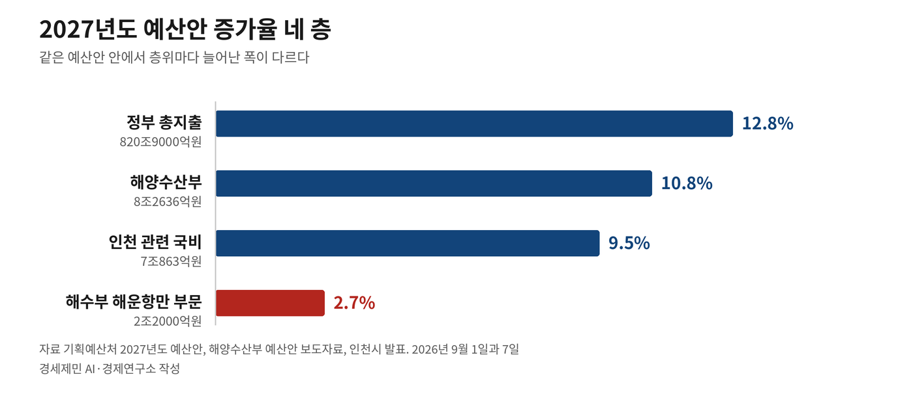
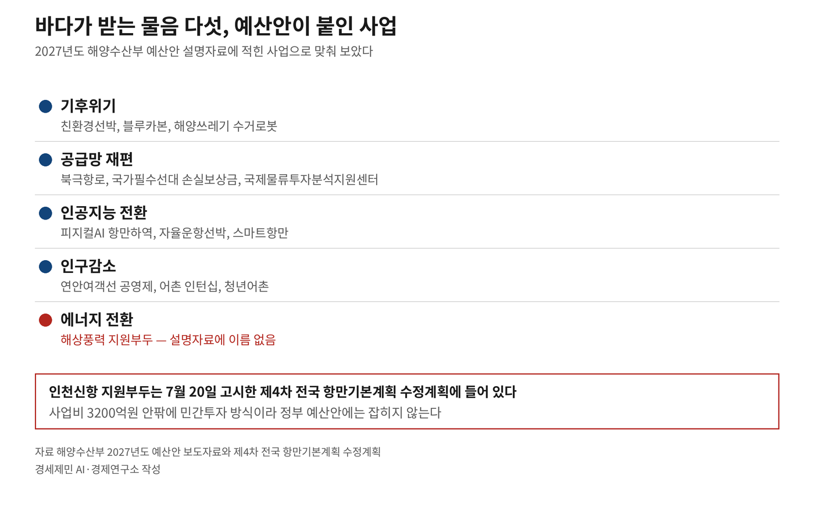
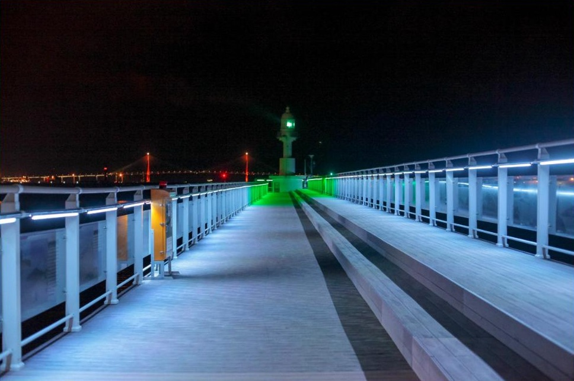

[5극3특 해양주권⑪] 부산은 해양수도 완성, 인천은 해수부 예산안에 사업이 없다
2027년도 국비 증가율, 정부 12.8% 해수부 10.8% 인천 9.5%
해수부가 사업 자리로 이름 적은 항만에 인천은 한 곳도 없다
인천시 "비수도권엔 가점 수도권엔 감점" 국회에 평가 기준 고쳐 달라 건의
기획예산처가 2027년도 예산안을 내놓은 9월 1일 부산시는 해양수도 부산을 완성할 핵심사업이 대거 반영됐다고 밝혔다. 같은 예산안에서 해양수산부는 사업 자리로 여러 항만의 이름을 적었다.
그 가운데 인천은 없다. 인천 국비 증가율은 9.5%로 정부 총지출 증가율 12.8%보다 3.3%포인트 낮다. 두 도시의 자리가 어떻게 갈렸는지 사실로 짚는다.
1. 증가율이 층을 이룬다
기획예산처는 9월 1일 2027년도 정부예산안을 냈다. 총지출 820조9000억원이고 올해보다 12.8% 늘었다. 정부는 역대 가장 높은 증가율이라고 밝혔다.
해양수산부 몫은 8조2636억원이다. 올해 7조4583억원보다 8053억원 늘었고 증가율은 10.8%다. 해수부는 2013년 재출범 이후 가장 높은 증가율이라고 설명했다.
인천 관련 국비는 7조863억원이고 증가율은 9.5%다. 세 숫자를 나란히 놓으면 12.8%와 10.8%와 9.5%다. 인천 증가율은 정부 총지출 증가율보다 3.3%포인트 낮다.
재원을 갈라 보면 한 대목이 더 있다. 국고보조사업은 6조141억원으로 12% 늘었다. 정부가 직접 시행하는 국가직접사업은 1조722억원으로 321억원 줄었고 감소율은 2.9%다.
해수부 예산을 부문별로 갈라 보면 폭이 또 다르다. 해양환경이 15.6%로 가장 많이 늘었고 수산어촌이 11.5%로 뒤를 이었다. 물류를 포함한 기타는 10%, 연구개발은 7.8%다.
해운항만은 2조2000억원으로 2.7% 늘었다. 다섯 부문 가운데 가장 낮다.

2. 부산은 이름이 있고 인천은 없다
해양수산부는 예산안을 내면서 중점 셋을 들었다. 첫째가 해양수도권 본격 육성이고 둘째가 수산업 체질 혁신과 어촌 활력 회복이며 셋째가 해양신산업이다. 증가 요인도 같은 순서로 적었다.
해양수도권에 담긴 사업은 여럿이다. 북극항로 시범운항 준비지원에 신규 184억원, 첨단해양산업 인재 육성에 신규 98억원이 붙었다. 피지컬 인공지능 항만하역이송장비 실증에는 신규 74억원이 들어갔다.
스마트항만 운영기술 개발은 94억원에서 180억원으로 늘었다. 국적선박 자율운항시스템 보급에는 신규 29억원이 붙었고 완전자율운항기술 개발은 63억원에서 157억원으로 늘었다.
대규모 항만개발 예산은 1조6700억원에서 1조6800억원으로 늘었다. 해수부가 그 항목에 이름을 적은 항만은 동해신항과 새만금신항과 군장항이다.
오염퇴적물 수거를 늘리는 대목에는 부산 감만부두와 묵호항이 적혀 있다. 그 예산은 148억원에서 202억원으로 늘었다. 크루즈터미널 시설 지원에는 대산항과 새만금항이 올랐다.

부산시는 예산안이 나온 9월 1일 해양수도 부산을 실현할 핵심사업이 대거 반영됐다고 밝혔다. 해수부가 신규 74억원을 붙인 피지컬 인공지능 항만하역이송장비 실증은 부산시 발표에 부산항 항만 자율하역장비 실증사업 73억5000만원으로 올라 있다.
해수부가 예산안 설명자료에 적은 사업 가운데 인천에 자리를 둔 것은 없다.
3. 옮겨야 받는 돈이 있다
해양수도권 사업 가운데 조건이 붙은 것이 하나 있다. 해수부는 해양수도권으로 기업이전을 유도하기 위해 지방이전 선사를 대상으로 친환경선박 건조 지원사업을 새로 마련했다고 적었다. 신규 121억원이다.
지원 대상은 옮기는 선사다. 인천에 본사를 둔 선사가 인천에 그대로 있으면 이 사업의 대상이 아니다.
본사를 이미 옮긴 곳의 사정은 따로 있다. 에이치엠엠은 육상직 1000여명 가운데 부산에서 일하는 인력이 100여명이다. 에스케이해운도 본사 육상직 200여명 가운데 부산 근무가 70명 안팎이다.
해양수도권이 어디인지 정부는 이미 밝혔다. 해양수산부가 5월 26일 국무회의에서 의결한 남부 해양수도권 육성방향은 부산과 울산과 경남을 하나의 해양경제권으로 묶는다. 부산은 국제 해양비즈니스 중심지로 적혀 있다.
이재명 대통령은 이틀 뒤 부산 영도 한국해양대에서 열린 제31회 바다의 날 기념식에서 부산을 명실상부한 대한민국 해양 수도로 육성하겠다고 밝혔다. 해양수산부는 2025년 12월 부산으로 옮겨 갔다.
인천항만공사는 9월 3일 발표한 항만공사 통합의 대상에 들어 있다. 스무 해 된 법인이 지역지사가 된다는 내용이다. 정부는 지역항만 연계 강화와 과당경쟁 억제와 해외 물류거점 공동 조성을 근거로 들었다.
기업을 옮기라고 돈을 붙인 해와 항만공사를 하나로 묶겠다고 발표한 해가 같다.
4. 인천은 감점을 고쳐 달라고 했다
인천시가 9월 22일 더불어민주당에 건의한 것은 돈만이 아니다. 인천시는 정부 공모사업에서 비수도권에는 가점이 주어지고 수도권에는 감점이 적용돼 인천이 불이익을 받고 있다며 합리적인 평가 기준을 마련해야 한다고 밝혔다.
창업도시 조성 프로젝트를 예로 들었다. 그 공모 대상에서 수도권 배제 문구를 삭제해 인천에 참여 기회를 보장해 달라고 요청했다.
중소벤처기업부가 6월 22일 낸 그 공모의 대상 도시는 넷이다. 대구와 광주와 대전과 울산이다. 공고문은 수도권과 비수도권의 창업 양극화 해소와 지역 창업 생태계 강화를 사업 취지로 적었다.

인천은 2025년 말 중소벤처기업부 지역 주도형 인공지능 대전환 공모와 산업통상부 인공지능 전환 실증 산단 구축 사업 공모에서 잇따라 떨어졌다.
이남주 인천시 미래산업국장은 3월에 공모 사업에서도 수도권이라는 이유로 불리하게 작용하는 경우가 있다고 말했다. 경쟁력이 있다고 판단했는데도 탈락하는 사례가 있다고도 했다.
박찬대 인천시장은 7월 1일 취임식에서 인공지능과 바이오와 문화와 에너지로 인천의 산업지도를 새로 그리겠다고 밝혔다. 인천공항과 인천항을 인공지능으로 깨우겠다는 말도 했다. 시가 ABC+E 전략이라 부르는 방향이다.
5. 시대의 물음에 무엇을 답했나
바다가 지금 받는 물음은 다섯이다. 기후위기와 공급망 재편과 인공지능 전환과 인구감소와 에너지 전환이다.
해수부 예산안은 그 가운데 넷에 사업을 붙였다. 친환경선박과 블루카본과 해양쓰레기 수거로봇이 첫째다. 북극항로와 국가필수선대 손실보상금과 국제물류투자분석지원센터가 둘째다.
피지컬 인공지능 항만하역과 자율운항선박과 스마트항만이 셋째다. 연안여객선 공영제와 어촌 인턴십과 청년어촌이 넷째다.
셋째 물음에 답한 정부 사업은 해수부 밖에도 있다. 산업통상부는 7월 10일 2026년 산업단지 지원사업 공모 결과를 냈다. 인공지능 전환 실증 산단은 포항과 청주와 구미가 맡는다.
현장 가까이 인공지능 데이터센터를 두는 엣지 실증 산단은 부산 명지녹산이 됐고 140억원으로 가장 많다. 인천은 두 사업 어느 쪽에도 이름이 없다. 같은 공모의 문화선도산단에는 부산과 인천과 원주가 뽑혔다.
다섯째인 에너지 전환에서 해상풍력 지원부두는 예산안 설명자료에 이름이 없다.
그 부두의 이름이 오른 자리는 따로 있다. 해양수산부가 7월 20일 고시한 제4차 항만기본계획 수정계획이다. 사업비 3200억원 안팎을 들여 인천신항 컨테이너부두 동측에 짓고 방식은 민간투자다.
정부가 재정을 대는 사업이 아니라서 예산안 설명자료에 나오지 않는다. 계획에 이름이 오른 것과 예산에 돈이 붙는 것은 다른 일이다.

인천시가 9월 22일 건의한 열두 건에는 해양수산산학진흥원 설립 타당성 용역비 5억원과 경인권 종합비상훈련장 설계비 14억원이 들어 있다.
정부예산안에 담기지 않아 국회로 간 사업들이다.
참고문헌
· 기획예산처(2026), 『2027년도 예산안』, 2026.09.01. 총지출 820조9000억원, 증가율 12.8%
· 해양수산부(2026), 『남부 해양수도권 육성방향』, 국무회의 의결, 2026.05.26. 부산·울산·경남을 하나의 광역 해양경제권으로. 부산은 국제 해양비즈니스 중심지.
· 곽도흔(2026), "부산 해양비즈ㆍ울산 친환경eㆍ경남 AI 물류⋯'남부 해양수도권' 육성", 『이투데이』, 2026.05.26. https://www.etoday.co.kr/news/view/2587620
· 박기석(2026), "李 '부산을 명실상부한 해양 수도로… 동남권, 남부 해양수도권 육성'", 『서울신문』, 2026.05.28. 제31회 바다의 날 기념식, 부산 영도 한국해양대. https://www.seoul.co.kr/news/politics/president/2026/05/28/20260528008002
· 박흥식(2026), "부산시 핵심사업, 2027년도 정부 예산안 대거 반영", 『이뉴스투데이』, 2026.09.01. 항만 자율하역장비 AX 실증사업 73억5000만원 신규. https://www.enewstoday.co.kr/news/articleView.html?idxno=2465463
· 신정훈(2026), "'해양 수도 완성 향해 한발 더…' 부산 역점사업 정부 예산안 대거 반영", 『서울신문』, 2026.09.01. https://www.seoul.co.kr/news/society/2026/09/01/20260901500205
· 해양수산부(2026), 『'바다에서 여는 대한민국의 새로운 성장' 2027년 해수부 정부 예산안 8.3조 원 편성』 보도자료, 기획재정담당관, 2026.09.01. https://www.mof.go.kr/doc/ko/selectDoc.do?docSeq=68462&bbsSeq=10&menuSeq=971
· "'바다에서 여는 대한민국의 새로운 성장'…2027년 해수부 정부 예산안 8.3조 편성", 『해사신문』, 2026.09.01. 해양수산부 제공 전문. http://www.haesanews.com/news/articleView.html?idxno=150659
· "내년 예산안 820.9조 원, 역대 최대…162조 미래대응기금 신설", 『대한민국 정책브리핑』, 2026.09.01. https://www.korea.kr/news/policyNewsView.do?newsId=148970973
· "인천시 내년 국비 정부안 7조863억 원… 첫 7조 원대", 『THE인천』, 2026.09.07. https://www.theicn.co.kr/news/articleView.html?idxno=11122
· 박선홍(2026), "인천시, 민주당에 국비 1559억원 추가 확보·핵심 현안 지원 요청", 『THE인천』, 2026.09.22. https://www.theicn.co.kr/news/articleView.html?idxno=11327
· 박귀빈(2026), "'수도권 역차별'에 막힌 인천 AI 대전환... 공모사업 잇따라 고배", 『경기일보』, 2026.03.11. https://www.kyeonggi.com/article/20260311580538
· 정기환·서경수(2026), "'해양수도전략실' 띄운 부산시…해운기업 지원은 여전히 '미흡'", 『프라임경제』, 2026.09.17. 에이치엠엠 육상직 1000여명 중 부산 100여명, 에스케이해운 200여명 중 70명 안팎. https://www.newsprime.co.kr/news/article/?no=748232
· 강주리(2026), "정부, '5극 3특' 이끌 산단 10개 선정…엣지AIDC 부산·AX실증 포항·청주·구미", 『서울신문』, 2026.07.10. https://www.seoul.co.kr/news/economy/2026/07/10/20260710500095
· 이종일(2026), "박찬대 인천시장 취임 '새 성장동력 창출, ABC+E 전략 가동'", 『이데일리』, 2026.07.01. https://www.edaily.co.kr/News/Read?newsId=03693286645510256&mediaCodeNo=257
· 중소벤처기업부(2026), 『2026년 창업도시 조성 프로젝트 창업기업 모집 통합공고』 제2026-403호, 2026.06.22. 기업마당 게재본으로 확인. https://www.bizinfo.go.kr/sii/siia/selectSIIA200Detail.do?pblancId=PBLN_000000000123430
· 해양수산부(2026), 『제4차 전국 항만기본계획 수정계획(2026~2030)』, 2026.07.20. 고시.
· 곽도흔(2026), "李정부 첫 항만 청사진…친환경에너지·해상풍력 중심으로 재편", 『이투데이』, 2026.07.19. 해수부 발표 인용. https://www.etoday.co.kr/news/view/2604836
· 이종선(2026), "첫발 뗀 인천해상풍력 배후항만, 영흥도 확장 없인 7GW 역부족", 『인천투데이』, 2026.07.20. https://www.incheontoday.com/news/articleView.html?idxno=321307
[사진 출처]
· [사진 1] 한국관광공사 포토코리아 「Mukhohang Port」, 촬영 조융권, 2025년 5월, 공공누리 제1유형. https://commons.wikimedia.org/wiki/File:Mukhohang_Port.jpg
· [사진 2] 인천 중구청 「문화의거리 끝 등대」, 2017년 10월 31일 촬영, 공공누리 제1유형.
#5극3특해양주권 #해양수도부산 #남부해양수도권 #2027년도예산안 #해운항만예산 #인천패싱 #수도권감점 #비수도권가점 #인천이중소외 #해상풍력지원부두